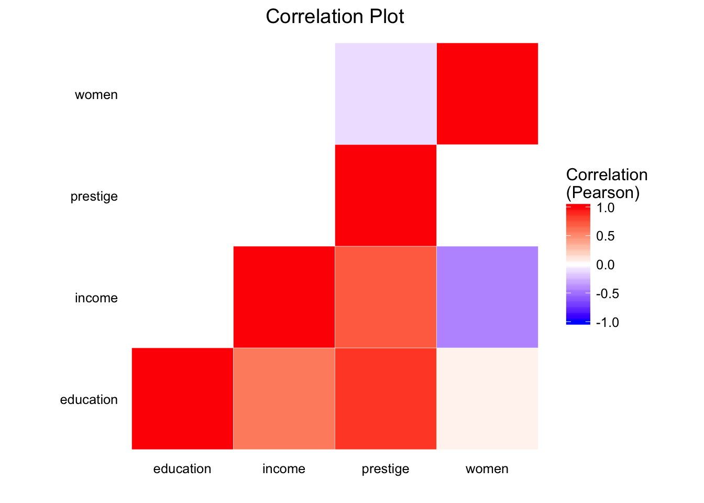
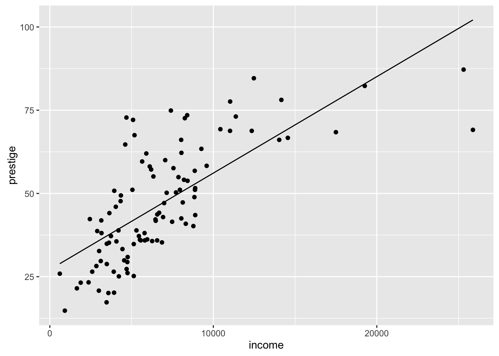

POL S/CS&SS 501, University of Washington, Winter 2016
$$ \DeclareMathOperator{\mean}{mean} \DeclareMathOperator{\var}{var} \DeclareMathOperator{\E}{E} \DeclareMathOperator{\MSE}{MSE} \DeclareMathOperator{\Bias}{Bias} \DeclareMathOperator{\SE}{se} \DeclareMathOperator{\SD}{sd} \DeclareMathOperator{\argmin}{argmin} \DeclareMathOperator{\argmax}{argmax} $$Lab 7: Covariance, Correlation, and Regression
Andreu Casas
February 26, 2016
Outline
In this lab we’ll look at different methdos to study the relationship between variables.
- Covariance
- Correlation
- Regression
Intro
We’ll use the dataset Prestige from the package car. Install it if you don’t have it. We will also use other packages that we’ve already used in previous labs: dplyr, ggplot2, broom.
library(car)
library(dplyr)
library(tidyr)
library(ggplot2)
library(broom)
library(GGally)Load the dataset Presige in the package car and take a look at it.
data("Prestige")
glimpse(Prestige)## Observations: 102
## Variables: 6
## $ education (dbl) 13.11, 12.26, 12.77, 11.42, 14.62, 15.64, 15.09, 15....
## $ income (int) 12351, 25879, 9271, 8865, 8403, 11030, 8258, 14163, ...
## $ women (dbl) 11.16, 4.02, 15.70, 9.11, 11.68, 5.13, 25.65, 2.69, ...
## $ prestige (dbl) 68.8, 69.1, 63.4, 56.8, 73.5, 77.6, 72.6, 78.1, 73.1...
## $ census (int) 1113, 1130, 1171, 1175, 2111, 2113, 2133, 2141, 2143...
## $ type (fctr) prof, prof, prof, prof, prof, prof, prof, prof, pro...The dataset was constructed using 1971 census data from Canada. Each observation of the dataset (nrow = 102) is an occupation (e.g. biologists, secretaries, athletes, etc.) and the variables are: the average education and income for the respondents with those occupations, the percentage of women respondents, the prestige of the occupation (Pineo-Porter prestige score: social survey from the 1960s), and typeof occupation (Blue collar -bc-, Professional -prof-, and White Collar -wc-).
Covariance
Imagine that we were interested in studying if there is a relationship between the average level of education for respondents with any given occupation and the average income.
One way to study such relationship would be to look at the covariance. Let’s start by to calculating the covariance between these 2 variables“manually” we need to know: the values of the two variables (y, x), their means (yhat, xhat), and the sample size (n).
x <- Prestige$education
y <- Prestige$income
n <- nrow(Prestige)
xhat <- mean(Prestige$education)
yhat <- mean(Prestige$income)
covariance <- sum((y - mean(y)) * (x - mean(x))) / (n-1)
covariance## [1] 6691.13In R we can also calculate the covariance using the function cov(). This function takes two vectors of the same length and calculates the covariance.
cov(Prestige$education, Prestige$income)## [1] 6691.13Correlation
One of the analytical downsides of calculating the covariance to study the relationship between two variables is that the resulting estimator is scale-dependent and it’s hard to compare it to other covariance estimators. To address this issue, we often calculate intsead the correlation of two variables; which is a standardized statistic that ranges from -1 to 1. Positive correlation values indicate a positive relationship and negative values a negative one. The closer the statistic is to -1 or to 1, the stronger the relationship between these two variables.
Let’s do the same we did with the covariance and calculate first the correlation between education and income manually. To do so we need: the covariance of x and y (covariance), the variance of x (varx) and the variance of y (vary)
varx <- var(Prestige$education)
vary <- var(Prestige$income)
cor_xy <- covariance / (sqrt(varx) * sqrt(vary))
cor_xy## [1] 0.5775802As it happened with calculating the covariance, there is also an R function to calculate the correlation of two variables: cor(). This variable also takes two vectors of the same length.
cor(Prestige$income, Prestige$education)## [1] 0.5775802Challenge
What other varibales of the Prestige dataset do you think are strongly related? Calculate the variance and the correlation between 2 other variables
You can also use R to calculate the correlation between all numeric variables in a dataset; but they have to be numerical! (numeric and integer R variables). To do that, let’s create a subset of Prestige only with the numeric variables education, income, women, and prestige.
prestige_num <- select(Prestige, education, income, women, prestige)
prestige_cor <- round(cor(prestige_num), 2)
prestige_cor## education income women prestige
## education 1.00 0.58 0.06 0.85
## income 0.58 1.00 -0.44 0.71
## women 0.06 -0.44 1.00 -0.12
## prestige 0.85 0.71 -0.12 1.00Instead of having a table with the correlation between all numeric variables, we can also create a plot.
Challenge
To create a correlation plot we need pretige_cor to be a tidy dataset. Try to arrange the dataset so that we have a dataset with three variables (var1,var2,value), where each observation is a pair of two variables and the correlation between them.
We first need to organize the dataset so that we can then plot the data using geom_tile() from ggplot2.
prestige_cor_new <- as.data.frame(prestige_cor) %>%
gather(var1, value) %>%
mutate(var2 = rep(unique(var1), nrow(prestige_cor)))And now we plot the correlation between the variables in Prestige:
ggplot(prestige_cor_new, aes(var1, var2))+
geom_tile(data=prestige_cor_new, aes(fill=value), color="white")+
scale_fill_gradient2(low="blue", high="red", mid="white",
midpoint=0, limit=c(-1,1), name="Correlation\n(Pearson)")+
theme(axis.text.x = element_text(angle=45, vjust=1, size=11, hjust=1))+
coord_equal() + labs(x = "", y = "") +
ggtitle("Correlation Plot")
Another function that allows us to visually look at the correlation between variables in our dataset is the ggpairs() function of the GGally package. This function plots: - distribution of each variable - relationship of between each pair of variables - reports Pearson correlation coeficients for all pairs
ggpairs(prestige_num)Regression
The basic R command for linear regression is lm(). We need to specify two main arguments in this function: the name of the dataset containing the key variables (data =) and the formula expressing our model (formula =). For the formula argument, we use the symbol ~ to separate the right from the left side of the equation.
reg <- lm(data = Prestige, formula = income ~ education)There are multiple ways to look at and explore the output of the regression:
- If we just type the resulting object in the console,
regin our case,Rreturns the formula of the model that generated that output + the coefficients for each covariate and the intercept. Not much info.
reg##
## Call:
## lm(formula = income ~ education, data = Prestige)
##
## Coefficients:
## (Intercept) education
## -2853.6 898.8- We can also use the
summary()function and insert the regression output (reg) as argument to get further details. In particularRreturns:
- Formula of the model
- Summary of the residuals
- A table with the:
- Coefficients
- SEs
- T-Values
- P-Values
- Multiple R-squared info
- F-statistic
summary(reg)##
## Call:
## lm(formula = income ~ education, data = Prestige)
##
## Residuals:
## Min 1Q Median 3Q Max
## -5493.2 -2433.8 -41.9 1491.5 17713.1
##
## Coefficients:
## Estimate Std. Error t value Pr(>|t|)
## (Intercept) -2853.6 1407.0 -2.028 0.0452 *
## education 898.8 127.0 7.075 2.08e-10 ***
## ---
## Signif. codes: 0 '***' 0.001 '**' 0.01 '*' 0.05 '.' 0.1 ' ' 1
##
## Residual standard error: 3483 on 100 degrees of freedom
## Multiple R-squared: 0.3336, Adjusted R-squared: 0.3269
## F-statistic: 50.06 on 1 and 100 DF, p-value: 2.079e-10- The regression output
regcontains more information than the one that thesummary()function returns. To take a look at the different info inreg, use thestr()function. You can do the same with the output of a large number of statistical tests inR. You can pull out any of these elements within the regression output object using the$dolar sign. Or you can also use the dolar sign to pull out an object from thesummaryofreg(summary(reg)). For example, you could pull out:
$coefficients: the coefficients for all the variables.$fitted.values: the predictions made by the model using the estimated coefficients$residuals: the difference betweent the predicted and actual values- …
str(reg)## List of 12
## $ coefficients : Named num [1:2] -2854 899
## ..- attr(*, "names")= chr [1:2] "(Intercept)" "education"
## $ residuals : Named num [1:102] 3421 17713 647 1454 -1884 ...
## ..- attr(*, "names")= chr [1:102] "gov.administrators" "general.managers" "accountants" "purchasing.officers" ...
## $ effects : Named num [1:102] -68655 -24646 -763 862 -4415 ...
## ..- attr(*, "names")= chr [1:102] "(Intercept)" "education" "" "" ...
## $ rank : int 2
## $ fitted.values: Named num [1:102] 8930 8166 8624 7411 10287 ...
## ..- attr(*, "names")= chr [1:102] "gov.administrators" "general.managers" "accountants" "purchasing.officers" ...
## $ assign : int [1:2] 0 1
## $ qr :List of 5
## ..$ qr : num [1:102, 1:2] -10.1 0.099 0.099 0.099 0.099 ...
## .. ..- attr(*, "dimnames")=List of 2
## .. .. ..$ : chr [1:102] "gov.administrators" "general.managers" "accountants" "purchasing.officers" ...
## .. .. ..$ : chr [1:2] "(Intercept)" "education"
## .. ..- attr(*, "assign")= int [1:2] 0 1
## ..$ qraux: num [1:2] 1.1 1.05
## ..$ pivot: int [1:2] 1 2
## ..$ tol : num 1e-07
## ..$ rank : int 2
## ..- attr(*, "class")= chr "qr"
## $ df.residual : int 100
## $ xlevels : Named list()
## $ call : language lm(formula = income ~ education, data = Prestige)
## $ terms :Classes 'terms', 'formula' length 3 income ~ education
## .. ..- attr(*, "variables")= language list(income, education)
## .. ..- attr(*, "factors")= int [1:2, 1] 0 1
## .. .. ..- attr(*, "dimnames")=List of 2
## .. .. .. ..$ : chr [1:2] "income" "education"
## .. .. .. ..$ : chr "education"
## .. ..- attr(*, "term.labels")= chr "education"
## .. ..- attr(*, "order")= int 1
## .. ..- attr(*, "intercept")= int 1
## .. ..- attr(*, "response")= int 1
## .. ..- attr(*, ".Environment")=<environment: R_GlobalEnv>
## .. ..- attr(*, "predvars")= language list(income, education)
## .. ..- attr(*, "dataClasses")= Named chr [1:2] "numeric" "numeric"
## .. .. ..- attr(*, "names")= chr [1:2] "income" "education"
## $ model :'data.frame': 102 obs. of 2 variables:
## ..$ income : int [1:102] 12351 25879 9271 8865 8403 11030 8258 14163 11377 11023 ...
## ..$ education: num [1:102] 13.1 12.3 12.8 11.4 14.6 ...
## ..- attr(*, "terms")=Classes 'terms', 'formula' length 3 income ~ education
## .. .. ..- attr(*, "variables")= language list(income, education)
## .. .. ..- attr(*, "factors")= int [1:2, 1] 0 1
## .. .. .. ..- attr(*, "dimnames")=List of 2
## .. .. .. .. ..$ : chr [1:2] "income" "education"
## .. .. .. .. ..$ : chr "education"
## .. .. ..- attr(*, "term.labels")= chr "education"
## .. .. ..- attr(*, "order")= int 1
## .. .. ..- attr(*, "intercept")= int 1
## .. .. ..- attr(*, "response")= int 1
## .. .. ..- attr(*, ".Environment")=<environment: R_GlobalEnv>
## .. .. ..- attr(*, "predvars")= language list(income, education)
## .. .. ..- attr(*, "dataClasses")= Named chr [1:2] "numeric" "numeric"
## .. .. .. ..- attr(*, "names")= chr [1:2] "income" "education"
## - attr(*, "class")= chr "lm"An alternative (easier) way to pull out the fitted values and the coefficients would be to use the functions fitted() and coefficients(). Also, we can calculate the standard errors of the coefficients by taking the square root of the diagonal of the variance-covariance matrix.
# str(summary(reg))
fit_vals <- fitted(reg)
coefs <- coefficients(reg)
se <- sqrt(diag(vcov(reg)))
reg_table <- data.frame(coefs = coefs, se = se)
reg_table## coefs se
## (Intercept) -2853.5856 1407.0392
## education 898.8128 127.0354The package broom has some functions to pull out and transform to friendly data.frames the output of statistical tests (e.g. t.test, lm, etc.). broom has 3 main functions:
tidy: Transforms into a ready-to-godata.framethe coefficients, SEs (and CIs if given), critical values, and p-values in statistical tests’ outputsaugment: Add columns to the original data that was modeled. This includes predictions, estandard error of the predictions, residuals, and others.glance: Always return a one-rowdata.framethat is a summary of the model: e.g. R2, adjusted R2, etc.
tidy(reg)## term estimate std.error statistic p.value
## 1 (Intercept) -2853.5856 1407.0392 -2.028078 4.521163e-02
## 2 education 898.8128 127.0354 7.075294 2.079192e-10new_Prestige <- augment(reg)
head(new_Prestige)## .rownames income education .fitted .se.fit .resid
## 1 gov.administrators 12351 13.11 8929.851 457.9908 3421.1492
## 2 general.managers 25879 12.26 8165.860 395.4004 17713.1401
## 3 accountants 9271 12.77 8624.254 430.8034 646.7456
## 4 purchasing.officers 8865 11.42 7410.857 355.6196 1454.1429
## 5 chemists 8403 14.62 10287.058 601.7919 -1884.0582
## 6 physicists 11030 15.64 11203.847 711.8591 -173.8473
## .hat .sigma .cooksd .std.resid
## 1 0.01728671 3483.702 8.633196e-03 0.99073621
## 2 0.01288466 3007.636 1.709611e-01 5.11812680
## 3 0.01529527 3500.313 2.718823e-04 0.18710263
## 4 0.01042246 3497.842 9.273713e-04 0.41964457
## 5 0.02984637 3495.644 4.638397e-03 -0.54912786
## 6 0.04176255 3500.881 5.664288e-05 -0.05098363.fitted: the model predictions for all observations.se.fit: the estandard error of the predictions.resid: the residuals of the predictions (acual - predicted values)
glance(reg)## r.squared adj.r.squared sigma statistic p.value df logLik
## 1 0.3335989 0.3269349 3483.378 50.05978 2.079192e-10 2 -975.6091
## AIC BIC deviance df.residual
## 1 1957.218 1965.093 1213392025 100For example, we can use the new dataset we created using the augment() function (new_Prestige) to plot the values of income predicted by the model (with 95% CIs) v. the actual values of income.
ggplot(new_Prestige, aes(x = income, y = .fitted)) +
geom_point() +
geom_line(aes(x = income, y = income)) +
geom_smooth(method = "lm", se = FALSE) 

This work is licensed under a Creative Commons Attribution-NonCommercial-ShareAlike 4.0 International License. R code is licensed under a BSD 2-clause license.